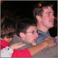
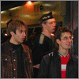
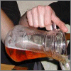
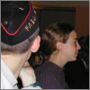
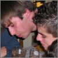
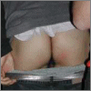
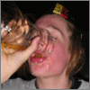

Repas HX5 210
Cliquez sur une photo pour l'agrandir...

Pré-repas 1
Pré-repas 2
Tagada, Tagada, Tagada Woohohohoooooo
J'ai aïe ! J'ai ouille ! J'ai quelque chose de pointu qui me rentre...

Dans le métro
Sur la route...
Benji fait faire le canard de l'espace au SexBizuth
Coin coin, je suis le canard de l'espace... Coin coin

Gus, Fétide et Fish devant le Flam's
Fish
De la bière...
Miss Khârrée

Gore
Miss Bizuthe
Des gens à table
Fish et Benji chantent



Des Bizuths qui apprennent à chanter
Cul de CDO Bizuth
Gus étanche sa soif
CDO Bizuth fait le canard